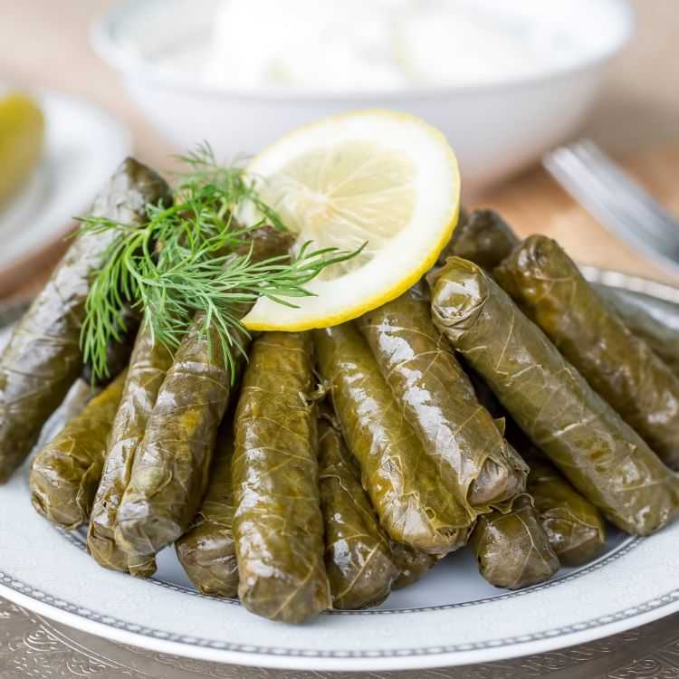

Turkish Cuisine >> Yaprak Sarma (Stuffed Grape Leaves)
Yaprak Sarma (Stuffed Grape Leaves)
Stuffed grape leaves “Yaprak Sarması” is one of the traditional and popular appetizer olive oil dish in Turkey. This vegan recipe comes back from Ottoman Cuisine.

“Yaprak” means leaves and “sarma” means to wrap. To make stuffed grape leaves “Sarma” the most common leaf we use is a grapevine leaf and I am going to use the ones I preserved back in the early summer. You can watch the details from the episode I shared on how to preserve it but you can also easily find it canned in Turkish, middle eastern, or Mediterranian stores.
In this version to give an extra sweet and sour taste, I am going to use cherries as well but even with or without cherries it will be surely a centerpiece on the table.
Ingredients:
- 2 big onions
- 1/3 cup olive oil
- 1 cup good quality rice
- about 2 tbsp pine nuts (It is used traditionally, I didn’t have on hand)
- 1 tsp each salt, sugar, allspice, black pepper
- 1+1/2 tsp cinnamon
- 2 heaped tbsp currants
- 1/2 bunch fresh dill
- about 300gr. more or less grape leaves washed a couple of times until most of the salt is gone, you can chew some to taste the salt. (If you buy preserved you can keep the rest in its salty water or freeze it.)
- about a cup fresh or frozen pitted cherries (optional)
- juice of a half lemon
- about 1/3 cup mineral / sparkling water
- about half cup hot water (cook the grape sarma/dolmas on low heat, let it soak the water, and cook in the steam. Don’t add too much water to it. Taste the sarmas and drizzle more water if needed and continue to cook until it is soft)
- more olive oil on top
Instructions:
- Cut the onions in half, then half again and slice them thinly.
- In a big wide pan add olive oil and onions. Sautee the onions, stirring frequently until they have golden colors about 5 minutes.
- Add the sugar, then washed and drained rice. Stir for about 2 minutes.
- Add salt, cinnamon, allspice, black pepper, and currants and stip for a couple of more minutes.
- Add about half cup hot water and cook halfway until the rice soaks the water.
- Turn off the heat. Finely chop the dill and add it. Stir gently and let it cool down to handle.
How To Wrap/Roll Sarma:
- Place a leaf shiny side down and the stem side looking toward you. Take out the stem if has any. Place about 1-2 tsp (depend on the size of the leaf) Add one piece of sour cherry on it and fold the leaf over and from the sides and roll it straight and tightly as possible.
- Arrange them in a wide pan. If you have torn or very hard and big leaves you can cover the bottom of the pan with them to prevent the sarmas burn and for a deeper flavor.
- Try to choose a wide pan so the rolled sarmas are not layered more than 3 layers for even cooking.
Source: https://www.turkishfoodtravel.com/2020/10/13/stuffed-grape-leaves-sarma/
[Go Top]